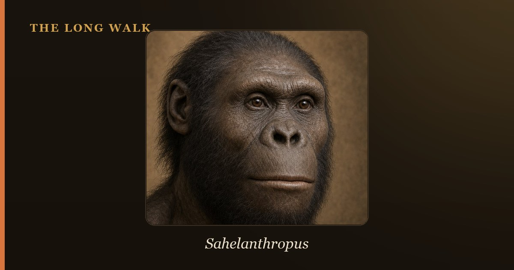

The Toumaï skull (catalogue number TM 266-01-060-1) is a roughly 7-million-year-old cranium from Chad and the type specimen of Sahelanthropus tchadensis, the oldest proposed member of the human lineage. Its skull hints at upright posture, but the decisive evidence would come from the legs. A partial femur found at the same spot has been read as bipedal (2022, 2026) and as ape-like (2020, 2024). The debate is genuinely unresolved.
On 19 July 2001, Ahounta Djimdoumalbaye, a Chadian student working with Michel Brunet’s Franco-Chadian team, found a skull lying on the surface of a wind-scoured dune at Toros-Menalla in the Djurab Desert of northern Chad. That fossil, now known as the Toumaï skull, became the type specimen of Sahelanthropus tchadensis. (A type specimen is the single fossil that officially defines a species.)
Brunet’s team published it in Nature in July 2002 as the oldest known hominin — a member of the human branch of the family tree after it split from the chimpanzee line. The nickname comes from the local Dazaga language and is usually translated as “hope of life”.
Almost everything about Toumaï has been argued over since. This article focuses on the hottest dispute: whether Sahelanthropus walked on two legs. For the species overview, see our Sahelanthropus tchadensis profile.

What the Toumaï skull actually shows
The cranium is nearly complete but was badly cracked and warped as it fossilised. In 2005, Christoph Zollikofer and colleagues used CT scans to build a virtual reconstruction that corrected the distortion. Their estimate of brain volume was 360–370 cc, within the chimpanzee range and about a quarter of a modern human’s.
So the braincase is ape-sized. What drew attention was a short list of other features:
- Small canines worn flat at the tip, rather than the long, sharpened canines of male apes.
- A relatively flat lower face beneath a thick brow ridge.
- A foramen magnum placed relatively far forward. The foramen magnum is the hole where the spinal cord leaves the skull. In upright walkers it sits underneath, so the head balances on a vertical spine.
That last trait is the skull’s main claim to bipedalism, and it is indirect. Critics point out that the opening falls in the zone where bonobos and humans overlap. A skull can suggest posture. It cannot prove how an animal moved.
Dating a fossil with no volcanic ash
Most East African hominins are dated by volcanic ash layers. Toros-Menalla has none. The first age of roughly 7 million years came from biochronology: matching the fossil animals found with Toumaï to dated animal communities elsewhere in Africa.
A 2008 study in PNAS by Anne-Elisabeth Lebatard and colleagues tried a different clock. It measured beryllium isotopes that build up in sediments at a known rate. The layers just above and below the fossil gave ages of about 6.8 and 7.2 million years. That bracket matches the animal evidence and puts Toumaï close to genetic estimates for the human–chimpanzee split.
The thigh bone that waited in a drawer
The skull was not alone at locality TM 266. A partial left femur, catalogued TM 266-01-063, was collected in July 2001 along with other bones. It was not recognised as a primate until 2004, when Aude Bergeret, then a student doing a taphonomy survey at the University of Poitiers, noticed it among animal fossils. (Taphonomy studies how bones get buried and preserved.)
The femur then went unpublished for 16 years. Roberto Macchiarelli and colleagues finally described it in 2020. Two partial forearm bones (ulnae TM 266-01-050 and TM 266-01-358) entered the debate in 2022, and the argument has not stopped since.
Six studies, two verdicts
| Study | Evidence | Verdict on walking |
|---|---|---|
| Brunet et al. 2002, Nature | Cranium, jaws, teeth | Hominin; possibly bipedal |
| Zollikofer et al. 2005, Nature | Virtual reconstruction of the skull base | Probably upright, but needs limb bones to test |
| Macchiarelli et al. 2020, J. Hum. Evol. | Femur shaft | Not habitually bipedal |
| Daver et al. 2022, Nature | Femur plus two ulnae | Habitual biped that also climbed trees |
| Cazenave et al. 2024, J. Hum. Evol. | Point-by-point re-review of the femur | No trait unique to bipeds; ape-like pattern |
| Williams et al. 2026, Sci. Adv. | 3D shape analysis and specific features | Early biped evolved from a chimp-like ape |
Guillaume Daver, Franck Guy and colleagues argued in 2022 that the femur’s shaft shape and internal structure fit habitual bipedalism. They also found that the ulnae carried signs of strong gripping, suggesting a creature that walked on two legs on the ground but clambered in trees.
In 2024, Marine Cazenave, Bernard Wood and co-authors replied. They agreed some features look like those of hominins. But none, they wrote, is found only in habitual bipeds, and several are found only in apes. Their point was about method: counting hominin-like traits is not enough if each trait also turns up in non-bipeds.
The newest paper, by Scott Williams and colleagues in Science Advances (January 2026), cuts both ways. In overall size and shape, the femur and ulna most resemble those of chimpanzees. Yet the team identified a femoral tubercle, a roughly 5 × 5 mm bump where a hip ligament attaches and which, they say, appears only in bipedal hominins. They also reported hominin-range twisting of the femur shaft and hip-muscle features. Their conclusion: an early biped that evolved from a chimp-like ape.
The association problem
There is a quieter issue under all of this. The femur was not found attached to the skull. Supplementary notes in the 2022 paper state that locality TM 266 holds at least three hominin individuals, and that the positions of the bones were not precisely recorded when they were collected.
That matters in two ways. First, the femur and the skull may well come from different individuals; the 2022 authors themselves call a same-individual link “highly hypothetical”. Second, Macchiarelli’s team noted that the femur could, in principle, belong to a different hominid entirely. The working assumption that it is Sahelanthropus is reasonable — it is the only large primate known from the site — but it is an assumption.
And some researchers doubt Sahelanthropus is a hominin at all. Within months of the 2002 description, Milford Wolpoff, Brigitte Senut, Martin Pickford and John Hawks argued in Nature that the skull lacked clear hominin traits and could belong to an ape. Their title asked whether it should be called “Sahelpithecus” (pithecus means ape).
Where the Toumaï skull leaves the story of upright walking
Read together, the papers point to an uncomfortable middle position. Nobody now argues that Sahelanthropus walked like us. The live question is whether it walked on two legs habitually, as part of a mixed repertoire with climbing, or only occasionally, as chimpanzees and gorillas sometimes do.
Three points are worth holding on to:
- Both sides agree the limbs look broadly chimp-like. The disagreement is over whether a few small features outweigh that overall resemblance.
- “Bipedal” is a spectrum. Orrorin from Kenya (about 6 million years old) and Ardipithecus (4.4 million) also mixed climbing and upright walking. If Sahelanthropus did too, it fits a pattern rather than breaking one. See Ardipithecus vs Australopithecus.
- Geography is the underrated surprise. Toros-Menalla lies some 2,600 km west of the East African Rift, where most early hominins have been found. Toumaï suggests that the early human range was wider than the fossil record shows, or that we have simply searched in too few places.
A complete pelvis or foot from Toros-Menalla, found with a skull, would settle much of this. Until then, the Toumaï skull remains the best candidate for the earliest hominin, with an honest question mark attached. For the bigger picture of why upright walking evolved at all, read why humans started walking upright, and see where Sahelanthropus sits on the interactive family tree.
Place Toumaï at the very root of the human story, 7 million years before the present, on the interactive family tree.
Explore the family tree →Frequently asked questions
What is the Toumaï skull?
The Toumaï skull, catalogue number TM 266-01-060-1, is a nearly complete but distorted cranium found in the Djurab Desert of Chad in 2001. It is the type specimen of Sahelanthropus tchadensis, the oldest proposed hominin.
How old is the Toumaï skull?
About 7 million years. Fossil animals found alongside it suggest that age, and a 2008 beryllium-isotope study bracketed the fossil layer between roughly 6.8 and 7.2 million years.
Was Sahelanthropus bipedal?
It is unresolved. The skull hints at upright posture. A partial femur from the same site has been read as evidence of habitual bipedalism (2022, 2026) and as ape-like (2020, 2024).
How big was Toumaï’s brain?
A 2005 virtual reconstruction estimated an endocranial volume of 360 to 370 cc, within the range of living chimpanzees.
Is Toumaï a human ancestor?
Possibly, but not proven. It may be an early hominin near the root of our lineage, a side branch, or an ape close to the human–chimpanzee split.
- Brunet, M. et al. (2002). 'A new hominid from the Upper Miocene of Chad, Central Africa.' Nature 418, 145–151. nature.com
- Daver, G., Guy, F. et al. (2022). 'Postcranial evidence of late Miocene hominin bipedalism in Chad.' Nature 609, 94–100. nature.com
- Cazenave, M. et al. (2024). 'Postcranial evidence does not support habitual bipedalism in Sahelanthropus tchadensis: A reply to Daver et al. (2022).' Journal of Human Evolution, 103557. doi.org
- Williams, S. A. et al. (2026). 'Earliest evidence of hominin bipedalism in Sahelanthropus tchadensis.' Science Advances. science.org